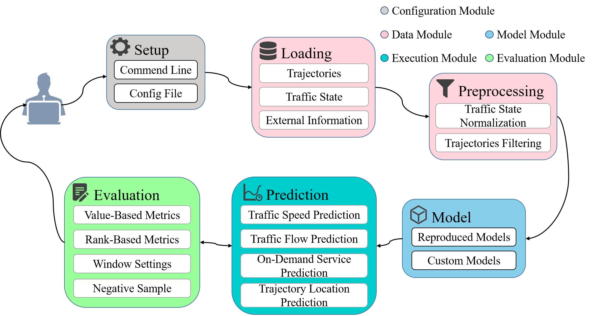

介绍¶
LibCity 是一个统一、灵活、全面、可扩展的交通预测库，为研究人员提供了可靠的实验工具和便捷的开发框架。 我们的库基于 PyTorch 实现，并将与交通预测相关的所有必要步骤或组件包含到系统的流水线中。
LibCity 目前支持以下任务：
交通状态预测（Traffic State Prediction）
交通流量预测（Traffic Flow Prediction）
交通速度预测（Traffic Speed Prediction）
交通需求量预测（On-Demand Service Predition）
轨迹下一跳预测（Traffic Location Prediction）
特性¶
统一性：LibCity 构建了一个系统的流水线以在一个统一的平台上实现、使用和评估交通预测模型。 我们设计了统一的时空数据存储格式、统一的模型实例化接口和标准的模型评估程序。
全面性：复现覆盖4个交通预测任务的42个模型，形成了全面的模型库。 同时，LibCity 收集了 29 个不同来源的常用数据集，并实现了一系列常用的性能评估指标和策略。
可扩展性：LibCity 实现了不同组件的模块化设计，允许用户灵活地加入自定义组件。 因此，新的研究人员可以在 LibCity 的支持下轻松开发新模型。
总体框架¶

Configuration Module：负责管理框架中涉及的所有参数。
Data Module：负责加载数据集和数据预处理操作。
Model Module：负责初始化基线模型或自定义模型。
Evaluation Module：负责通过多个指标评估模型预测结果。
Execution Module：负责模型训练和预测。